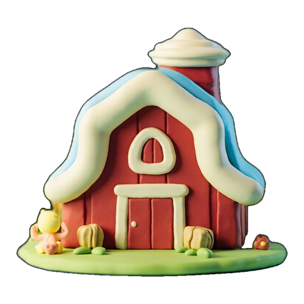
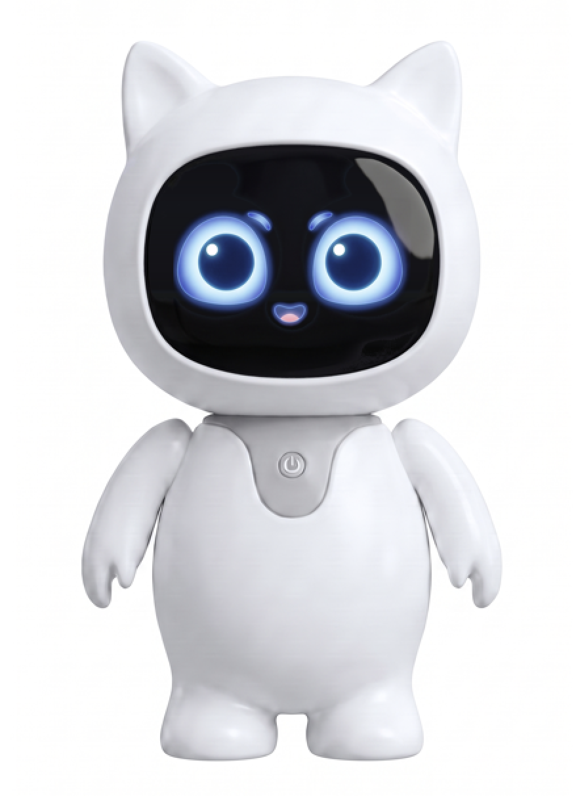

barn
Hello! I’m TeeBot. Welcome to the farm — this is a barn!
All four layers of render-contract.v1 in landscape: the entire barn background clip playing edge-to-edge, the clay barn icon anchored above the real barn, and TeeBot flying deep into the scene, landing far away on the road, then walking up the road toward you — arriving up close to blink, look around, talk and flap his arms in a warm hello. The road route is mapped from the background itself, so his feet stay on dirt the whole way.